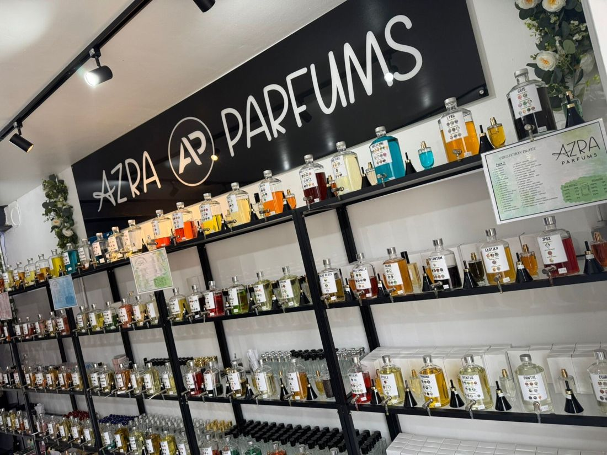

Plus de 300 parfums à 30 % d'essence. Ton parfum dès 6 €, et ta recharge encore moins chère.
15 ml, à glisser sous le sapin
2 × 30 ml, un pour elle, un pour lui
100 ml, sa fragrance préférée
Ramène ton flacon AZRA : tu économises jusqu'à 2 € à chaque recharge.
Lattafa, El Nabil, Fragranza, Blu Home
Un parfum qui tient toute la journée
Ton flacon, rechargé moins cher
Parfums de linge, diffuseurs, ambiance

Dans le vrai site, ta cliente pourra :
Et toi, tu reçois une notification avec le son sur ton téléphone pour chaque commande.
Ton panel de gestion sera ici : tes commandes, tes stocks, tes prix et tes clientes, le tout depuis ton téléphone, avec un code secret.